Chicken do Rangeela / Double colored Chicken
First let me thank Disha D'souza for this unique idea. 2-3 weeks ago in a facebook group I saw her unique post and really got inspired. Though I changed the name and recipe little bit (hope she won't mind), but the idea credit must go to Disha. Lots of love and thanks from 'spicy world' to her. Now lets talk about the dish. You can see this is a double colored chicken curry. I also maintain two different taste with the color. I know you are thinking that the process will be lenthy, believe me its not. The taste is phenomenal and goes very well with rice. You can also serve this with naan, paratha or roti. Try this in your kitchen and make your meal a colourful one.

Ingredients
- Red colored Chicken:
- 6 pieces of with bone chicken.
- 1 cup thinly sliced onion.
- 1 Teaspoon ginger and garlic paste.
- ½ cup chopped tomato.
- Spice powder (1 Teaspoon turmeric powder, 1 Teaspoon red chilli powder, 1 Teaspoon kashmiri red chilli powder).
- 1 Teaspoon garam masala powder.
- 1 Teaspoon sugar.
- Salt.
- 3 Tablespoons of mustard oil.
- Warm water.
- Green colored Chicken:
- 6 pieces of with bone chicken.
- 1 cup thinly sliced onion.
- A bunch of coriander leaves.
- 1 clove of garlic.
- 4 green chilies.
- ½ cup chopped green capsicum.
- 5 Teaspoons curd / yogurt.
- 1 - 2 Teaspoons black pepper powder.
- 1 Teaspoon kasuri methi / dry fenugreek leaves.
- 6 black pepper corns.
- Salt and sugar.
- 3 Tablespoons of white oil.
- Warm water.

Steps
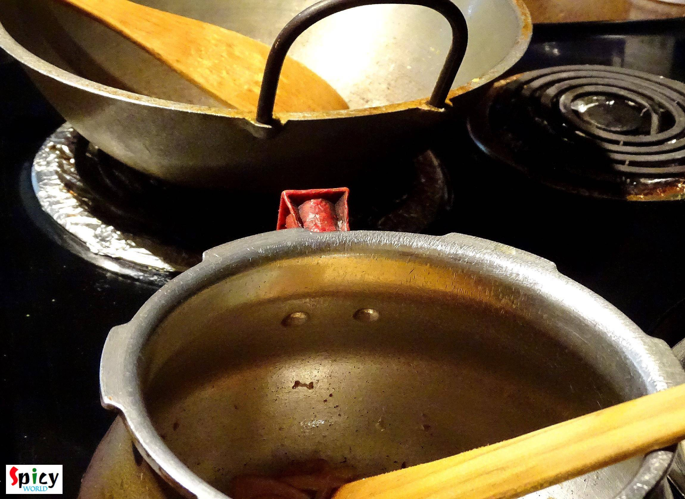
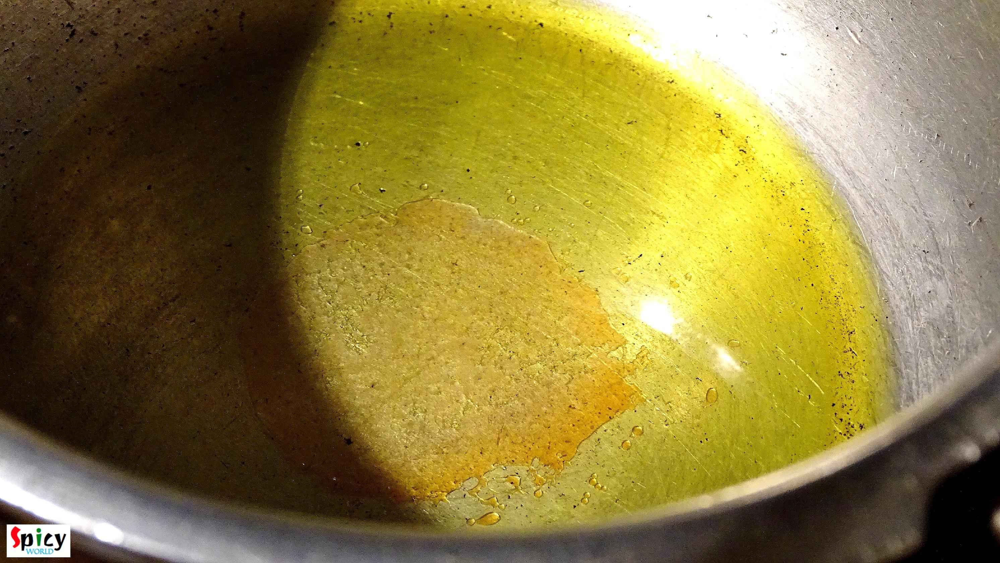
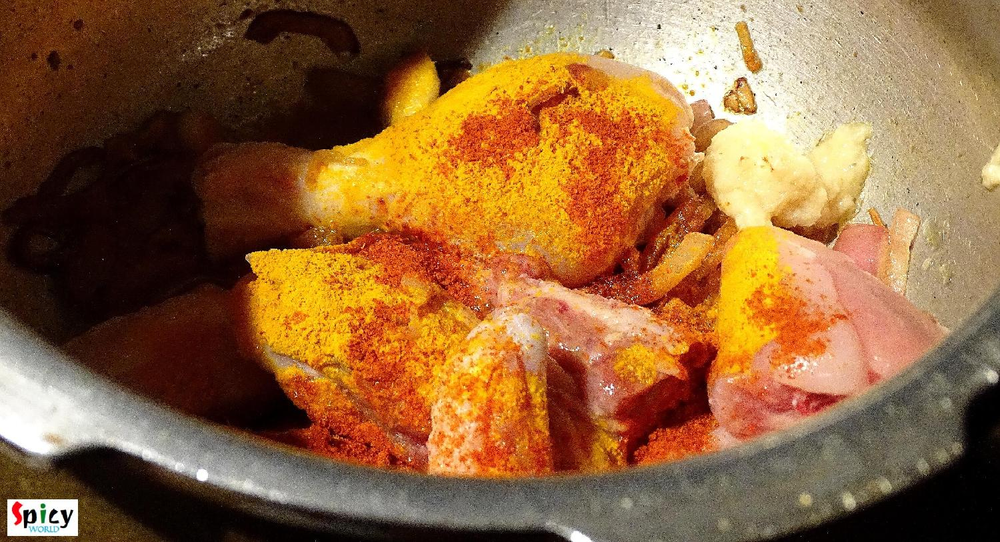
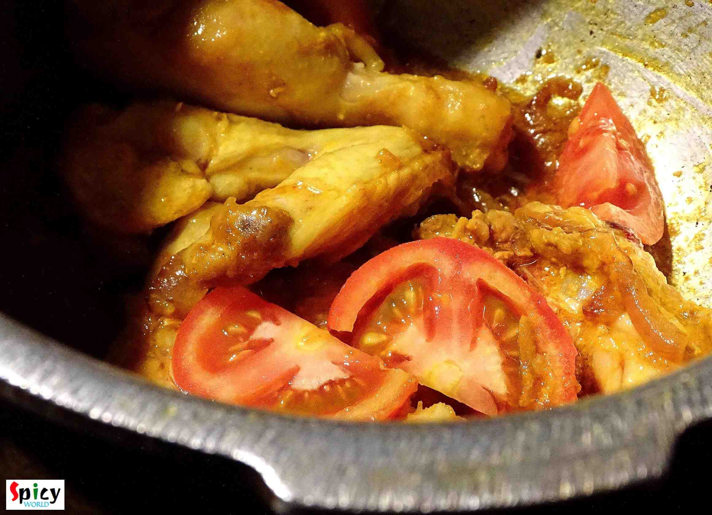
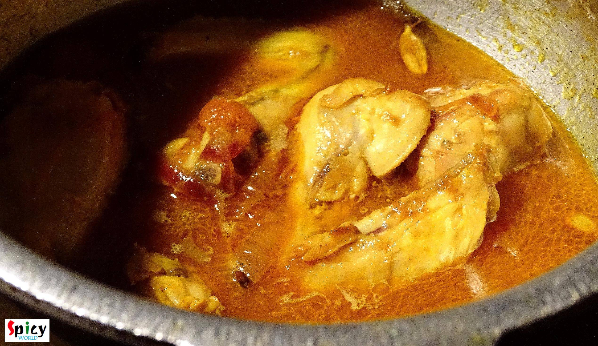
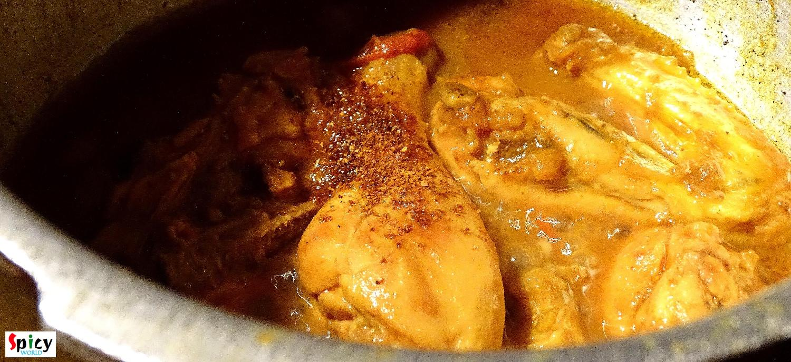
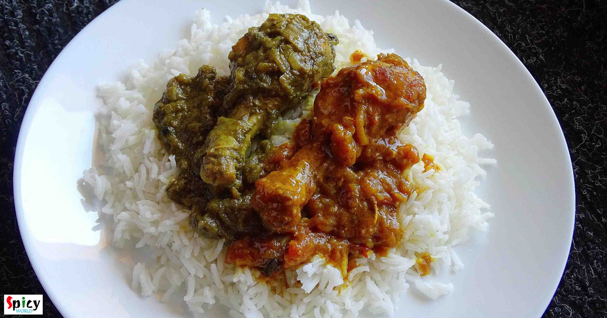
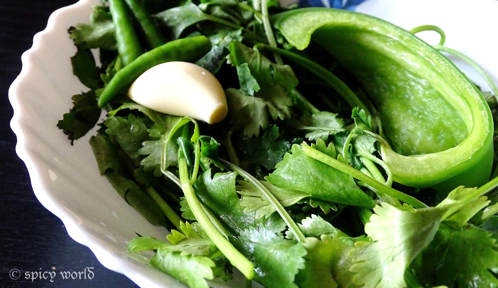
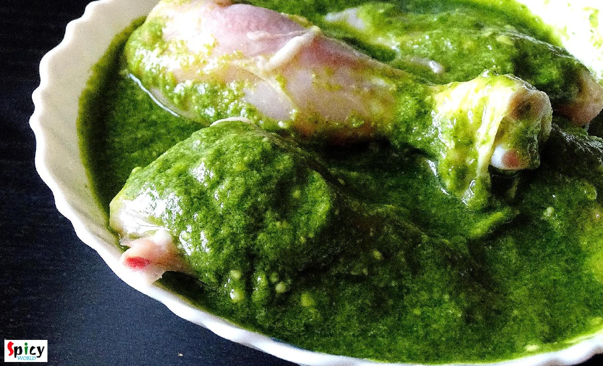
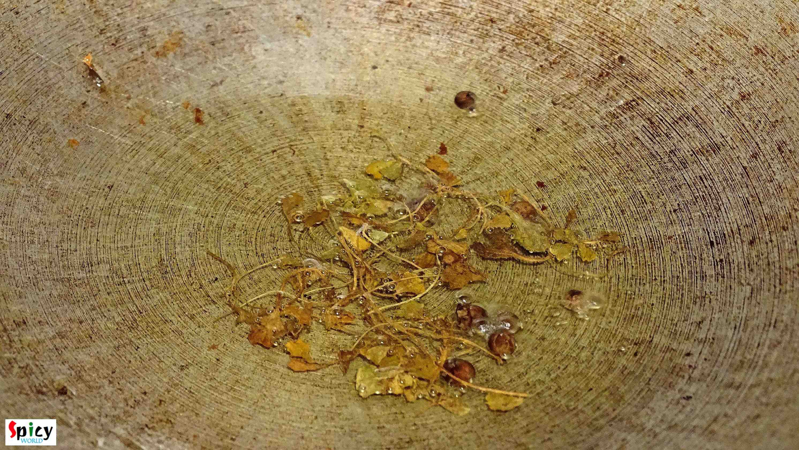
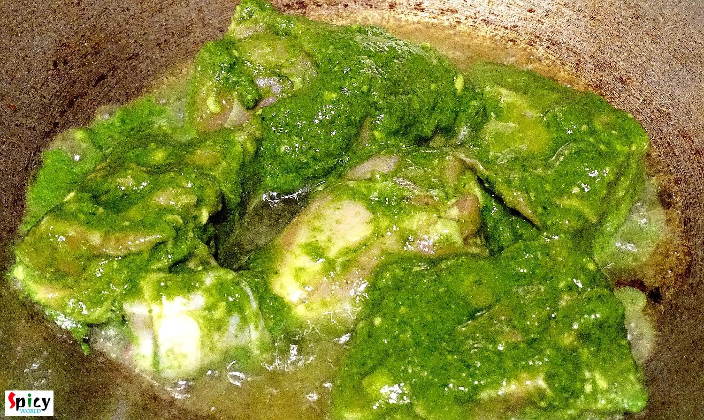
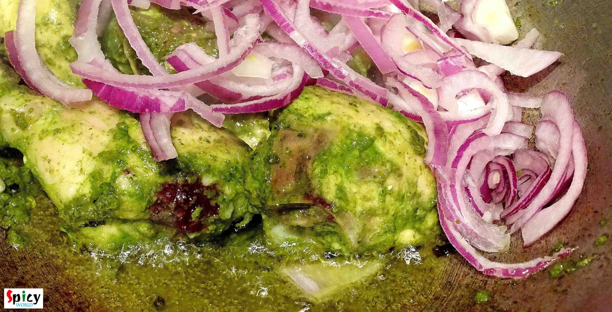
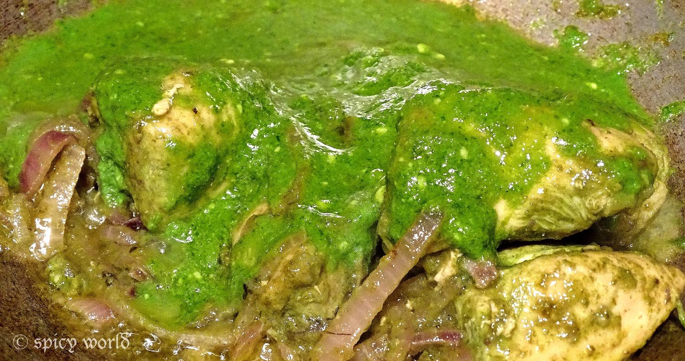
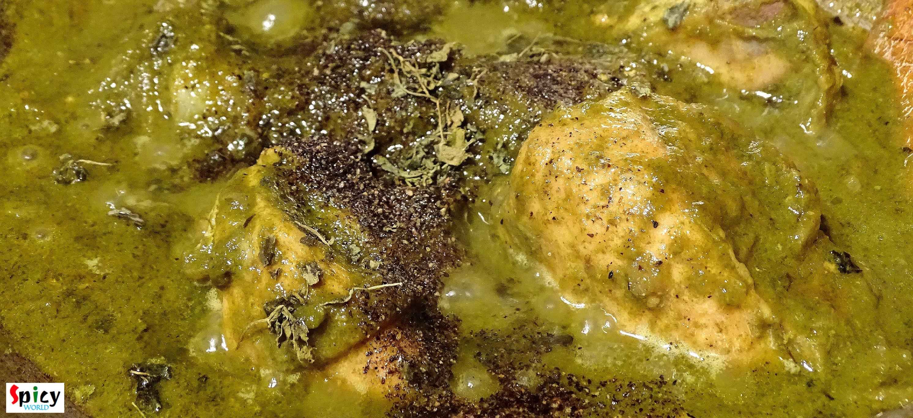
- Serve this hot with rice, naan or paratha.
")